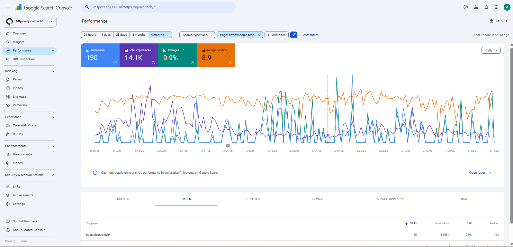
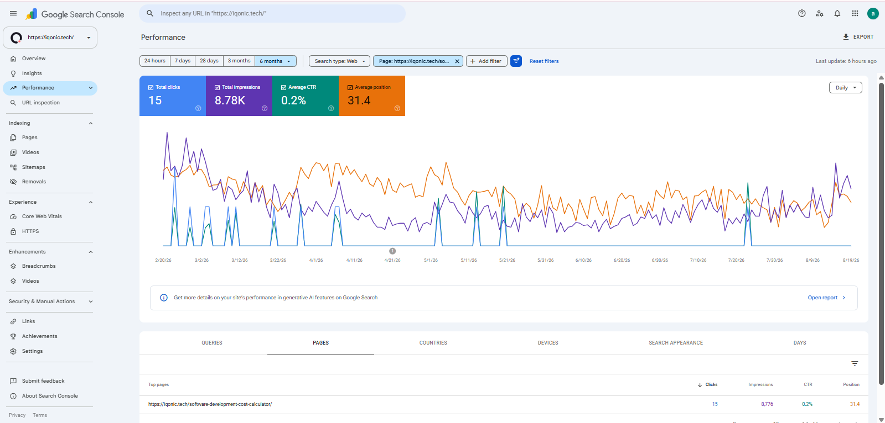
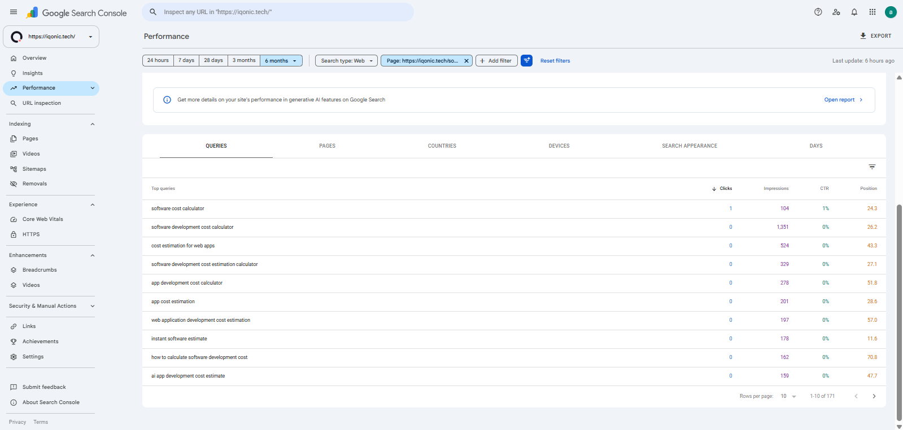
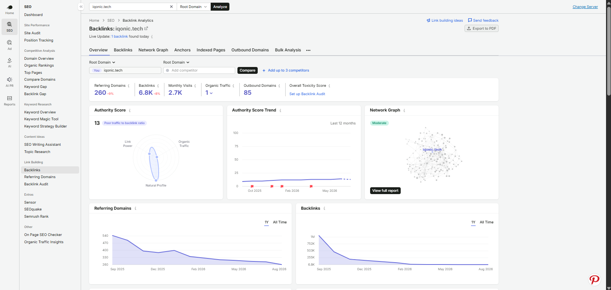
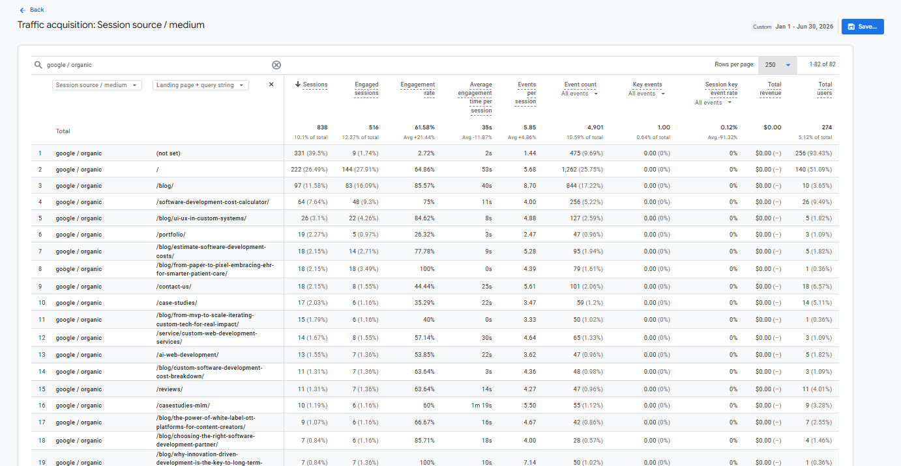

The Starting Point
IQONIC Tech was already an established software-development website.
This was not a new domain that needed its entire SEO foundation built, and it was not a project where I was responsible for replacing the website's complete organic strategy.
My assignment was narrower.
The Homepage
The page needed stronger commercial positioning, clearer keyword targeting, improved content structure, better metadata, stronger internal linking, and a more distinct explanation of what IQONIC Tech represented.
Software Development Cost Calculator
This was a new commercial landing page that needed to become useful for people searching for software-development cost information while also supporting lead generation.
At the same time, I was responsible for leading ongoing off-page SEO activity.
So the project was built around:
The Initial SEO Problems
Because my scope was focused, I did not approach IQONIC Tech like a full-site technical SEO campaign.
The main issues were concentrated around the two pages I owned.
Homepage SEO
- Generic content
- Weak keyword targeting
- Heading hierarchy that needed improvement
- Metadata that was not properly optimized
- Limited FAQs
- Internal linking opportunities
- Weak CTA positioning
- No sufficiently clear AI-first differentiation
- Commercial positioning that could be stronger
The website needed to communicate more clearly:
- What IQONIC Tech does
- Who it helps
- What makes its approach different
- What users should do next
Calculator-Page SEO
The Software Development Cost Calculator created a different problem.
It had to satisfy users searching for:
- Software development costs
- App development costs
- Website development costs
- Project estimation
- Cost calculators
But it also had a commercial purpose.
If the page became too sales-heavy, it would fail the informational intent behind the search. If it became purely informational, it would fail its lead-generation role.
Off-Page SEO
IQONIC Tech also needed continued external support around important commercial themes.
- Relevant placements
- Domain-quality review
- Target-page selection
- Anchor-text planning
- Homepage support
- Blog support
- Commercial-topic relevance
The objective was not simply to increase backlink volume. It was to support the pages and themes that mattered most.
My Role
My role on IQONIC Tech was deliberately focused.
I personally handled:
- Homepage content strategy
- Homepage on-page SEO
- Software Development Cost Calculator content
- Calculator-page on-page SEO
- Keyword research
- Competitor research
- Search-intent mapping
- Internal linking
- Metadata
- CTA optimization
- Off-page SEO leadership
- Backlink review and approval
I also review and approve backlinks created by the team before they are built.
That distinction matters because a portfolio should show the real scope of responsibility rather than make every project look larger than it was.
Starting With Page Prioritization
The first strategic decision was not a keyword. It was scope.
Rather than spreading limited effort across the entire website, I focused on two pages with clear commercial value.
Homepage
The main company and positioning page.
Software Development Cost Calculator
A new search-driven utility with direct lead-generation potential.
This meant optimization could go much deeper on those pages instead of becoming a shallow site-wide exercise.
The project followed a simpler sequence:
Repositioning the Homepage
The homepage needed stronger positioning around IQONIC Tech's main commercial offering.
One of my key recommendations was introducing the company as an:
AI-First Custom Software Development Company
The AI-first direction was based on the changing software-development market and the way IQONIC Tech was positioning its actual development approach.
The objective was not to insert AI simply because the term was popular. It was to connect the company's existing software-development capability with a more current and differentiated market position.
The live homepage now leads with:
and explains AI-assisted discovery, planning, development, QA, automation, and post-launch improvement as part of its delivery model.
Building the Homepage Keyword Strategy
The homepage needed one clear commercial direction rather than an unrelated collection of service keywords.
Primary Keyword
- Custom Software Development
Secondary & Supporting Keywords
- IQONIC Tech
- Custom EHR Solutions
- Tech Solutions
- Custom Admin Panels
- Online Booking Solutions
The objective was to keep the main positioning clear while using supporting terms to represent important areas of the business.
Instead of trying to make every service equally prominent for SEO, the homepage hierarchy became:
This gave the page a clearer search identity.
Rebuilding the Homepage Content
I rewrote and optimized the major SEO and conversion elements of the homepage.
- H1 structure
- H2 structure
- Hero copy
- Service content
- Industry content
- AI-first messaging
- FAQs
- Meta title
- Meta description
- Internal linking
- Calls to action
- Image alt text
The page needed to answer four basic questions clearly:
- What does IQONIC Tech do?
- Who does it help?
- Why is its approach different?
- What should the user do next?
This meant SEO and conversion messaging had to support each other rather than be treated as separate tasks.
The current homepage connects custom software development with healthcare solutions, business software, booking platforms, web/mobile development, MVP development, AI development, and the software cost calculator.
Homepage Search Performance
During the current six-month reporting period, the homepage recorded:
Organic Clicks
130
Search Impressions
14,061
CTR
0.9%
Average Position
8.9
Reported Keyword Footprint
Ranking Keywords
172
Some of the stronger branded queries include:
- iqonic
- iqonic tech
- iqonic company
- iqonic app
The page has also started gaining visibility around non-branded searches such as:
- custom tech solutions
- personalized tech solutions
Because there is no clean pre-optimization comparison period, I do not present these numbers as a percentage-growth claim. They represent the page's current search footprint.

Building the Software Development Cost Calculator
The second priority page required a completely different SEO approach.
Software Development Cost Calculator
needed to work as three things simultaneously:
- A Free Tool
- An Informational Search Landing Page
- A Commercial Lead-Generation Page
The page content was created from scratch.
The goal was to capture users researching software, website, and app development costs while also giving them enough useful context to understand the estimation process before asking them to take a commercial action.
The live calculator combines project-cost ranges, estimation steps, example projects, calculator output, benefits, FAQs, and consultation CTAs.
Understanding Calculator Search Intent
Before building the page, I reviewed relevant calculator and estimation pages from competitors including:
- ScienceSoft
- SumatoSoft
- SDH Global
The purpose was not to copy their content.
I analyzed:
- Search intent
- Page structure
- Useful supporting information
- Cost-related questions
- Calculator context
- Conversion paths
The key insight was simple:
That principle shaped the page architecture.
Building the Calculator Keyword Strategy
Primary Keyword
- Software Development Cost Calculator
Secondary Keywords
- App Development Cost Calculator
- Web Development Cost Calculator
- Software Development Costs
- Software Project Cost Calculator
- App Project Cost Estimates
- Website Project Cost Estimates
Unlike the homepage, most meaningful search opportunities for the calculator were non-branded.
That made the page particularly useful from an SEO perspective. It could reach users who did not already know IQONIC Tech but were actively researching project costs.
Designing the Content Architecture
The calculator needed to balance informational and commercial intent.
I structured the page around a natural progression.
1. Tool-Focused Hero
Immediately explain what the calculator does.
2. Typical Project Costs
Give users context around software, website, and app development pricing.
3. How the Calculator Works
Explain the estimation process.
4. Example Estimates
Show realistic development scenarios.
5. Calculator Output
Deliver the main value users came for.
6. Benefits
Explain why the estimation process is useful.
7. Reviews
Provide supporting trust.
8. Detailed FAQs
Address additional cost-related questions and long-tail searches.
9. Final Conversion CTA
Introduce consultation only after the page has delivered useful information.
This allowed:
to happen in the correct order.
The current calculator follows this same broad structure and includes examples for simple websites, ecommerce websites, mobile apps, and custom software projects.
Optimizing the Calculator On Page
I handled the complete on-page content layer.
- H1
- H2
- H3 hierarchy
- Primary keyword targeting
- Secondary keyword targeting
- Full page content
- Meta title
- Meta description
- FAQs
- Internal linking
- CTA copy
- Image alt text
- Search-intent optimization
Because the page was built from scratch, content architecture and keyword architecture could be designed together. This is usually cleaner than trying to retrofit SEO after a page has already been fully built.
Calculator Search Performance
During the current six-month period, the calculator recorded:
Organic Clicks
15
Search Impressions
8,776
CTR
0.2%
Average Position
31.4
Reported Keyword Footprint
Ranking Keywords
166
The page is still early in its search lifecycle. I do not present it as a finished SEO success.
Its value is that a newly created commercial landing page has established search visibility across a broad range of relevant, non-branded cost-estimation queries.

Building Non-Branded Keyword Visibility
Some of the main queries visible in the supplied Google Search Console report include:
Clicks 104
Impressions 1%
CTR 24.3
Average Position
Clicks 1,351
Impressions 0%
CTR 26.2
Average Position
Clicks 524
Impressions 0%
CTR 43.3
Average Position
Clicks 329
Impressions 0%
CTR 27.1
Average Position
These positions are not yet strong enough to call the page a ranking success.
But they show that Google has begun associating the new page with the intended commercial topic. That creates real query data that can now guide future optimization.

Building a Search Footprint Across 166 Keywords
The calculator's broader reported keyword footprint is one of the most useful early outcomes.
The page appears across searches related to:
- Software development cost
- Software cost calculators
- App development calculators
- Web development estimates
- Software project estimation
This matters because the page is not dependent on one exact-match keyword. Instead, it has started developing relevance across a broader search theme.
That gives future optimization a better starting point.
Google Search Console data can now help identify:
- Which queries are gaining impressions
- Which sections need stronger coverage
- Which titles or descriptions can improve CTR
- Which FAQs can be expanded
- Which long-tail searches deserve more attention
Important distinction: the supplied GSC query table shows 171 visible query rows in that selected report. I keep the original 166 ranking keywords figure as a separately reported SEO metric rather than treating GSC row count and ranking-keyword count as the same measurement.
Connecting the Pages Through Internal Linking
Internal linking connected the two priority pages with the wider IQONIC Tech website.
Homepage
Cost Calculator
Blogs
This helped connect informational and commercial page groups while reinforcing the relationship between the calculator and IQONIC Tech's core software-development services.
The live homepage currently includes a direct section promoting the calculator as a way to estimate software, website, and app project costs.
Supporting the Pages With Off-Page SEO
Alongside on-page optimization, I lead IQONIC Tech's ongoing backlink activity.
Approximately:
40 Backlinks
have been built through:
- Link exchanges
- Relevant external placements
- Websites within the wider business ecosystem
The backlink strategy primarily supports:
- Homepage
- Blog pages
- Relevant commercial themes
Common non-branded anchor text includes:
- Software development
- Custom software development
- Software development calculator
I review:
- Website relevance
- Domain quality
- Target URLs
- Anchor text
before placements are approved.
The objective is to support the website's search presence with relevant external signals rather than simply increase backlink counts.

Current SEO Results
Because this project does not have a clean before-and-after comparison period, the results should be read differently from projects such as Streamit or Earthly Jewels.
The strongest measurable evidence is the current search footprint.
Homepage
130 clicks
14,061 impressions
8.9 average position
172 ranking keywords reported
Software Development Cost Calculator
15 clicks
8,776 impressions
31.4 average position
166 ranking keywords reported
The calculator is particularly useful because it was created from scratch and its meaningful query set is predominantly non-branded.
That means it is beginning to reach users searching for a problem or tool rather than for IQONIC Tech specifically.
What Worked Best
The most valuable result was not one individual ranking.
It was establishing search visibility around pages that had either:
- been substantially repositioned
- been created from scratch
The calculator is the clearest example.
Before the page existed, it could not build search visibility around this topic through that URL.
It now has:
Ranking Keywords Reported
166
Search Impressions
8,776
across a commercial cost-estimation theme.
That gives the page a measurable base for continued optimization.
Business Impact
The optimized pages have also contributed to lead and conversion activity.
However, exact commercial figures are confidential and are intentionally excluded from this portfolio.
Proof of Work
The strongest proof is placed directly beside the relevant claims throughout the case study. This section acts as a compact evidence recap rather than repeating every screenshot.
Organic Traffic
Google / Organic Sessions
838
Engaged Sessions
516
Engagement Rate
61.58%
Avg. Engagement Time / Session
35s
Events / Session
5.85
Total Users
274
Calculator Landing Page in GA4
64 Google / Organic sessions · 48 engaged sessions · 75% engagement rate · 26 users in the supplied GA4 reporting period.

This keeps the proof connected to the claims instead of placing unrelated screenshots in one gallery.
Tools & Platforms Used
- Google Search Console
- Google Analytics
- Semrush
- Ubersuggest
- Competitor SERP Research
- Backlink Research & Monitoring Tools
The Most Difficult Part
The most difficult part of IQONIC Tech was not a technical migration or indexing problem.
It was balancing search intent with commercial intent on the Software Development Cost Calculator.
A Search User Wants
Useful Information + A Realistic Estimate
The Business Wants
A Qualified Lead
If the page became too promotional, it would weaken the user's reason for visiting. If the page became purely informational, it could fail its commercial purpose.
The solution was to structure the experience around:
That search-intent balance became one of the most useful parts of the project for me.
What I Learned
IQONIC Tech reinforced an important SEO lesson:
You do not always need to optimize an entire website before you can create meaningful search opportunities.
Sometimes the better strategy is to identify the pages that matter most and give those pages the strongest possible:
A focused approach can be especially useful when project scope, resources, or priorities are limited.
The calculator also reinforced how useful a new search-driven tool can become when its SEO architecture and user experience are planned together from the beginning.
My Biggest Takeaway
My role on IQONIC Tech was narrower than on projects where I own SEO end to end.
That is exactly why it belongs in my portfolio.
It demonstrates that I do not need to own every part of a website to create useful SEO work.
I can work within a defined scope, identify the highest-value pages, understand what users are searching for, build the content architecture, optimize the on-page elements, connect those pages to the wider website, and support them with an off-page strategy.
The Software Development Cost Calculator especially reinforced a principle I now use across other projects:
For me, this project demonstrates that I can:
Optimize high-value commercial pages, understand complex search intent, build content from scratch, support pages with internal and external signals, and turn focused SEO work into a growing organic search footprint.